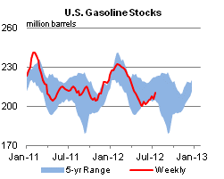

Released: July 25, 2012
Next Release: August 1, 2012
Update of the Status of East Coast Refineries
Concerns regarding the supply of refined products on the U.S. East Coast have eased considerably in recent months, reflecting both an improved outlook for regional refining activity and success in meeting logistical challenges. In a February 2012 report the U.S. Energy Information Administration (EIA) had considered the impacts of a potential loss of almost 700,000 barrels per day (bbl/d) of the Northeast's (PADD 1A and 1B) refining capacity by mid-2012, including Sunoco's Philadelphia refinery (335,000 bbl/d) in addition to ConocoPhillips' Trainer (185,000 bbl/d) and Sunoco's Marcus Hook (178,000 bbl/d) refineries that had closed in September and December 2011. Additionally, a major supplier of imports to the U.S. East Coast, HOVENSA's St. Croix refinery in the U.S. Virgin Islands, closed in the first quarter of 2012. The need for the February report arose from the coincident actual and announced closings of these refineries that would have taken place within a year of one another. In a scenario with all three of the Philadelphia-area refineries shut down, EIA estimated an additional 420,000 barrels per day (bbl/d) of petroleum products from outside the region would be needed to meet demand. EIA noted sufficient volumes of product would be likely available from Gulf Coast refiners or overseas suppliers to meet this requirement. However, EIA also found that stress on existing product supply infrastructure which had been closely integrated with the local refineries was possible, potentially raising the cost of fuel for consumers in the region.
The worst case scenario evaluated in EIA's report has not come to pass. Following the recently formed joint venture between The Carlyle Group and Sunoco, the Sunoco Philadelphia refinery is now expected to remain in operation. In addition, Delta Air Lines has purchased the Trainer refinery and has announced plans to restart it in the third quarter of 2012. With these two refineries in operation, the supply of petroleum products refined in the Northeast region is expected to be much higher than in the scenario EIA considered in its February report, greatly reducing the requirement for additional petroleum products from outside the region. Other developments, including increased product flows into the region from the Midwest (PADD 2) that were identified as a possible outcome in the EIA report and an increased capacity to bring waterborne products into the product pipelines originating in the Philadelphia area, have also contributed to the easing of product supply concerns. Notably, the ability to bring in products to pipelines that feed Pennsylvania and western New York has increased as a result of Sunoco Logistics' Eagle Point Terminal in New Jersey becoming operational. With a connection to the Colonial Pipeline as well as dock capacity to bring in waterborne petroleum products and move them on the pipelines running westward, Eagle Point helps to create a more flexible infrastructure in the region.
EIA has updated its calculations of supply requirements for the Northeast markets that appeared in the February report. The previously estimated regional "supply gap" of approximately 420,000 bbl/d for gasoline and ultra-low sulfur diesel (ULSD) combined that would have resulted from the idling of the three Philadelphia-area refineries is now expected to be just 50,000 bbl/d (Figure 1) of ULSD, with the gasoline gap disappearing almost entirely. The remaining potential ULSD supply gap is largely the result of an expected increase in demand for ULSD because of New York State's requirement that beginning in July 2012, all distillate fuel used for heating purposes be ULSD.
{kind=link}
Moving about 50,000 bbl/d of additional ULSD to the Northeast should be well within the capacity of existing infrastructure. While global ULSD markets remain tight, the U.S. Gulf Coast is a major center of ULSD production, exporting an average of almost 580,000 bbl/d of ULSD in 2012 through April. Given the recent 55,000-bbl/d expansion of the distillate segment of the southern portion of the Colonial Pipeline, the ability to ship ULSD from the Gulf Coast has increased by more than the updated estimate of additional supply required from outside the region. While the expanded capacity is only on the southern portion of the pipeline, where gasoline and distillate fuels have separate lines, it should help to deliver additional volumes of ULSD on the northern portion of the line (Greensboro, NC to Linden, NJ). However, on the northern portion of the pipeline, gasoline and distillate do not have separate lines. Thus, additional volumes of ULSD moving on the northern portion of the Colonial pipeline could crowd out shipments of other fuels such as gasoline until 2013, when Colonial is expected to complete an expansion on the Greensboro-to-Linden portion of the pipeline. As gasoline is available in greater volumes globally, importing additional barrels should not pose a challenge. It is also possible the Northeast refineries could increase ULSD production, reducing the need for additional supplies from outside the region. For example, The Carlyle Group and Sunoco joint venture announced planned upgrades to the Philadelphia refinery, including the installation of a hydrocracker, that will support higher ULSD yields.
While the petroleum product supply picture in the Northeast has definitely brightened, EIA's current analysis is based on projected consumption from EIA's monthly forecasts. If consumption were to deviate significantly from projected levels for any reason, supply requirements would change accordingly. Global ULSD markets remain tight, and attracting supplies to the Northeast means competing with other demand centers, particularly Europe.
Gasoline and diesel fuel prices both increase for the 3rd consecutive week
The U.S. average retail price of regular gasoline increased seven cents this week to $3.49 per gallon, 21 cents per gallon lower than last year at this time. The average price decreased in the Rocky Mountain region to $3.49 per gallon, down two cents from last week, while prices increased in all other regions. This is the 14th consecutive week that the Rocky Mountain price has decreased, dropping 31 cents since April 16, 2012. The Gulf Coast saw the largest increase, with the price up nine cents to $3.29 per gallon. On the East Coast, the average gasoline price increased eight cents to $3.49 per gallon. In the Midwest, the average gasoline price is $3.48 per gallon, an increase of six cents from last week. Rounding out the regions, the West Coast price increased four cents to $3.72 per gallon.
The national average diesel fuel price increased nine cents to $3.78 per gallon, 17 cents per gallon lower than last year at this time. Prices increased in all regions of the Nation, with the largest increase on the West Coast, where the average price increased ten cents to $3.90 per gallon. Prices in the East Coast, Midwest, and Gulf Coast regions all increased nine cents, to $3.83 per gallon, $3.75 per gallon, and $3.71 per gallon, respectively. For the first time since February 13, 2012, the Rocky Mountain price is the lowest in the Nation, increasing three cents to $3.70 per gallon.
Stocks of propane continue growth
Total U.S. inventories of propane continued their seasonal growth last week, adding 1.3 million barrels to end at 66.0 million barrels, 18 million barrels (37 percent) higher than a year ago. The Gulf Coast and Midwest regions grew by 0.6 and 0.5 million barrels respectively, while the Rocky Mountain/West Coast region added 0.3 million barrels. Propane inventories on the East Coast fell by 0.1 million barrels. Propylene non-fuel-use inventories represented 7.0 percent of total propane inventories.
Text from the previous editions of This Week In Petroleum is accessible through a link at the top right-hand corner of this page.
| Retail Data | Change From Last | Retail Data | Change From Last | ||||
| 07/23/12 | Week | Year | 07/23/12 | Week | Year | ||
| Gasoline | 3.494 | Diesel Fuel | 3.783 | ||||
|
|||||||||||||||||||||||||||
| *Note: Crude Oil Price in Dollars per Barrel. | |||||||||||||||||||||||||||
|  | |||||||
| Stocks Data | Change From Last | Stocks Data | Change From Last | ||||
| 07/20/12 | Week | Year | 07/20/12 | Week | Year | ||
| Crude Oil | 380.1 | Distillate | 125.2 | ||||
| Gasoline | 210.0 | Propane | 66.018 | ||||